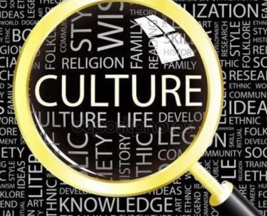

В России в целом за последние несколько лет произошел серьезный скачок в управлении сферой культуры...
заявил Министр Культуры
Современная эпоха и современная культура представителями СМИ и идеологами информационного общества определяются как цифровые, по названию технологий, пришедших на смену аналоговым и стремительно изменяющих формы коммуникаций, городскую среду, ценности, природу человека, общественные отношения и мир вокруг.
Цифровая культура система ценностей, установок, норм и правил поведения, которую принимает, поддерживает и транслирует команда цифровой трансформации.
Благодаря влиянию интернета и цифровых технологий на общественную жизнь, мы наблюдаем изменение стандартов научного обоснования, сложившейся структуры знаний. Cтираются границы между частной и публичной сферами коммуникаций, значительный спектр взаимодействий переносится из социальной реальности в формы виртуального общения в сети.
Усиление техно-дискурса в культуре сопровождается новыми формами интеграции социогуманитарного знания и технических наук (гуманитарная информатика и др.). С 50-х гг. XX в.происходит становление цифровой культуры как междисциплинарного направления, в рамках которого формируются многообразные концептуальные модели. Формы цифровой культуры представляют многообразные практики в художественной сфере (в виде техно-художественных гибридных образований, таких как пост-цифровоe искусство, видео инсталляции); в научном познании (цифровые гуманитарные науки, контекстная эпистемология); и образовании (Art–&–Science, геймификация).
Как ранее заявлял министр культуры РФ Владимир Мединский на Российском инвестиционном форуме в Сочи, 95% средств нацпроекта «Культура» пойдут на региональные проекты:
«Мы хотим, чтобы произведения искусства были предельно доступны всем нашим гражданам».
В Минкультуры России подчеркивают, что одним из драйверов для культурной среды являются цифровые технологии. Например, виртуальные концертные залы, онлайн-трансляции на портале культура.рф (где можно, например, посмотреть как архивные спектакли, так и совсем недавние премьеры), развитие Национальной электронной библиотеки, виртуальные музеи и мультимедийные гиды, другие проекты с использованием цифрового пространства значительно расширяют возможности организаций культуры. «Любой житель нашей страны вне зависимости от места проживания получит доступ к лучшим образцам академического искусства и сможет, например, посмотреть в прямом эфире концерт Дениса Мацуева из зала имени Чайковского Московской филармонии»,— заявил на Санкт-Петербургском международном культурном форуме Владимир Мединский.